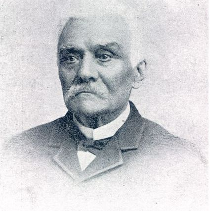

Histoire du jeu de dame
Drôle de dames
Thierry DEPAULIS est l’auteur de ce texte, publié dans le magazine "Tangente-Jeux" de septembre-octobre-novembre 2003.
Avec Philippe JEANNERET, ils ont co-écrit différents livres sur le jeu de dames.
Découvrez les jeux de l’esprit avec le site internet du magazine "Tangente".
La difficulté de cette histoire suppose que le lecteur damiste français accepte de considérer qu’il ne joue pas sur le damier le plus ancien.
Comme nous le verrons, les dames à 100 cases sont arrivées bonnes dernières. Jusqu’au XVIIIe siècle, on a joué aux dames, en France comme ailleurs, sur... un échiquier (alors muni de 12 pions par joueur).
La plus ancienne référence aux dames reste celle évoquée par Eloi d’ARMEVAL dans son Livre de deablerie, imprimé à Paris en 1508. Puis nous rencontrons plusieurs mentions de ce jeu ou de ses dérivés "damier" et "damer".
François RABELAIS, entre autres, fait figurer "aux dames" dans sa longue liste de jeux du chapitre XXII de Gargantua (1534)
La France n’est pas la seule contrée gagnée par le nouveau jeu au XVIe siècle : l’Espagne a pour elle d’être le pays où paraissent les premiers traités imprimés.
En 1547, Antonio de TORQUEMADA publie à Valence, El ingenio, o juego de marro de punta o damas, premier livre consacré au jeu de dames dont l’unique exemplaire fut hélas détruit en 1812.
D’autres livres paraissent, eux aussi à Valence : Pedro RUIZ MONTERO publie son Libro del juego de las damas vulgarmente nombrado el marro en 1591 et Lorenzo VALLS son Libro del juego de las damas, ppor otro nombre el marro de punta en 1507.
Quel jeu ? Quelles règles ?
En fait, ces livres sont tous bâtis sur le même modèle : un diagramme numéroté pour expliquer la notation, puis une série de parties notées.
On en déduit tout de même les principes essentiels du jeu espagnol : obligation de prendre, promotion du pion, dame à grands déplacements.
Les dames ont aussi les honneurs d’un dictionnaire, celui de Sebastian de COVARRUBIAS, Tesoro de la lengua castellana o española (1611).
A l’article "dama", le grand lexicographe espagnol écrit : "Le jeu de dames, avec le tablier des échecs, tout le monde le connaît; on le nomme ainsi parce qu’il est facile ou à cause de la façon de jouer les pions avec la liberté de la dame".
Aux Pays-Bas, la première référence au jeu de dames date de 1552. Quelques années plus tard, un dictionnaire français-flamand, publié en 1562 à Gand, donne "daemberd oft daemspel : jeu des dames, damier ou tablier".
Au XVIIe siècle, les références littéraires se multiplient. Mais, en l’absence de tout traité ou manuel, il est impossible de savoir comment on jouait précisémment.
L’actuel Bénélux ayant été un temps sous tutelle espagnole, il y a quelques chances pour que les dames y aient suivi les règles ibériques, mais l’ancien jeu français, avec sa dame "courte", était sans doute connu aux Pays-Bas.
L’Italie semble avoir mis plus de temps à adopter le nouveau jeu. C’est au naturaliste bolonais Ulisse ALDROVANDI (1522-1605) que l’on doit la première mention du "gioco della dama" avec une description en latin.
Mais ce n’est qu’en 1604 que l’expression "alla dama" apparaît pour la première fois dans un texte imprimé. On notera le singulier, qui est resté de mise en italien.
L’Allemagne, quant à elle, n’a connu les dames qu’avec retard. C’est le livre de "Gustavus SELENUS" (alias Auguste duc de Brunswick Lunebourg), Das Schach - oder König-Spiel (le jeu royal des échecs), publié à Leipzig en 1616, qui donne la première mention du "Dammen-Spiel" en allemand.
En 1637, Daniel MARTIN, "maistre en la langue françoise à Strasbourg", dans un manuel de conversation intitulé Parlement nouveau, ou Centurie interlinaire, consacre tout un chapitre (bilingue!) à "Du jeu des dames / Vom Dammenspiel" où il est clairement entendu que les joueurs joueront "à toute rigueur", une règle que nous retrouvons plus loin sous le nom de "forçat".
L'ancien jeu français
On ne sait selon quelles règles Louis XIII, devenu roi à 9 ans, jouait aux dames, mais il y jouait assez souvent comme en témoigne le Journal de son médecin Jean HEROARD.
Pourtant, le premier recueil de règles publié en France, La maison académique des jeux (Paris, 1654), ne donne pas les règles des dames alors qu’on trouve celles du piquet, du tric-trac, du billard, de la paume et de bien d’autres!
Les rééditions suivantes ne réparent pas l’omission.
Heureusement, un passionné du jeu de dames, publie en 1668 ce qu’il faut bien considérer comme le premier ouvrage à exposer en détail les règles du jeu : Le jeu de dames, avec toutes les maximes & règles tant générales que particulières qu’il faut observer an icelui et la métode d’y bien jouer par Pierre MALLET, ingénieur ordinéré du Roy & proféseur aux siances matématiques, à Paris.
On aura remarqué l’"ortografe nouvéle & rézonée" promue par l’auteur. Pierre MALLET présente cinq variantes des dames, toutes sur 64 cases : le (grand) forçat, le petit forçat, le plaisant, la variante italienne et le coquimbert.
Les deux premiers seuls ont droit aux "règles générales, canons ou maximes" et à de nombreux exemples. On y reconnaît les règles de l’actuel jeu anglais.
les Origines

On doit à Josep BRUNET Y BELLET d’avoir proposé le premier, à la fin du XIXe siècle, l’hypothèse la plus crédible quant à la naissance des dames : celles-ci seraient nées au Moyen-Age de la transposition du jeu alquerque de doce ("marelle de douze") sur un échiquier.
Par là, l’érudit catalan s’opposait à ceux qui voyaient dans les dames une simplification des échecs.
Le grand historien des échecs Harold MURRAY devait par la suite adopter ce point de vue en y greffant ses propres trouvailles.
Dans son livre A History of Board Games other than Chess (Oxford, 1952), il affirme que le jeu est né au XIIe siècle, probablement dans le sud de la France.
Approfondie par l’historien hollandais K.W. KRUIJSWIJK dans un livre essentiel (Algemende historie en bibliografie van het damspel, La Haye, 1966), cette localisation est aujourd’hui contestée.
Les regards se tournent donc à nouveau vers l’Espagne, où nous trouvons l’ancêtre présumé des dames, le jeu alquerque de doce, décrit et illustré dans le fameux Livre des jeux du Roi Alphonse X, achevé en 1283.
Cette "marelle de douze" se jouait sur un tablier fait de 6 lignes horizontales et de 6 lignes verticales entrecroisées et traversées de diagonales dans les deux sens.
Les pions, au nombre de 12 par joueur, se déplacaient sur les intersections, offrant ainsi 25 positions (cases) possibles. La prise se faisait en sautant.
Un jeu du XVe siècle pourrait bien avoir assuré la transition. Nommé andarraya, mentionné dès 1429, il figure dans ce qui est le premier vrai dictionnaire de castillan, le diccionario romance en latin d’Antonio de NEBRIJA (1495) où le mot est qualifié de "nouveau".
Le tablier ne comprend pas de lignes verticales ni horizontales, ce qui oblige à disposer les pions comme aux dames.
Hors d’Espagne, les textes restent très discrets, mais plusieurs diagrammes bien reconnaissables de marelles de douze ont été relevés ici et là - en Angleterre, en Italie et même en France.
Certains d’entre eux peuvent être datés du Moyen-Age, révélant ainsi la diffusion du jeu.